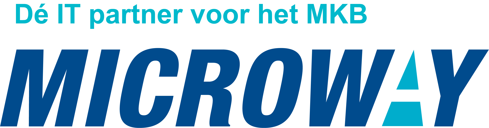

Projecten
Hier staat de timeline die ik heb doorlopen om te komen tot de website die u nu bekijkt.
voltooide en toekomstige projecten zullen hier ook getoond worden.
30 aug. 2021
Start opleiding
Op maandag 30 augustus 2021 start ik met de opleiding Software developer op het Koning Willem I College in Den Bosch.
5 nov. 2021
24 jan. 2022
2e Project oplevering
Nieuw jaar nieuwe website. Het periode 2 eindproject was een eigen portfolio website (individueel) en deze moest ook responsive zijn voor mobiele apparaten. Dit was een leuke uitdaging om te maken en ik was erg trots op het resultaat.
04 feb. 2022
Door naar het versnelde traject van de opleiding 🥳🎉
Na 2 periodes werd bepaald op basis van je behaalde resultaten of je door mocht naar het versnelde traject van de opleiding (4 jaar in 3 jaar).
21 apr. 2022
3e Project oplevering
Het 3e project (gemaakt in groepsverband) van het jaar was een website voor het Koning Willem I College waar gebruikers en potentiële studenten voor de ICT academie een enquête konden invullen, vervolgens berekende deze dan met de punten telling die aan de vragenlijst hing een score en kon deze tonen welke ICT opleiding het beste bij je past.
29 jun. 2022
Laatste project af en vakantie
Het laatste project bestond uit een website waarop het mogelijk was voor de horeca afdeling van het Koning Willem I College om etentjes/diners in te kunnen plannen, aanpassen en te verwijderen (crud). Gebruikers konden dan alleen de etentjes zien en niet aanpassen etc. Leerjaar 1 is voltooid, veel kennis opgedaan en door naar leerjaar 2.
29 aug. 2022
Start stage
Leerjaar 2 begon met een stage voor de eerste 2 periodes ik heb stage gelopen bij Microway in Den Bosch hier heb ik verschillende opdrachten uitgevoerd (voornamelijk bezig geweest met narrowcasting en Power BI), maar ook had ik tijd om aan eigen opdrachten te werken zoals een website voor school maar ook deze website.
6 okt. 2022
Start leren tailwind
Ik had me voorgenomen dat ik graag een keer Tailwind wilde leren en ook had ik nog geen eigen (los van school staande) website. Tijdens deze periode heb ik veel guides gevolgd en dingen uitgeprobeerd.
4 nov. 2022
Huidige website grotendeels voltooid
Hetgeen dat je tot hier kunt lezen en alle andere pagina's zijn op de dag van schrijven 4 november 2022 gemaakt/geschreven.
11 nov. 2022
Domeinnaam geregristreerd
De website staat nu live op het internet en is te bezoeken via de domeinnaam siemenvandebraak.com, maar wel moeten er nog een paar dingen toegevoegd worden. Verder heeft de site ook nog grote verbeteringen gekregen zoals een verbeterde donkere modus en een verbeterde mobiele versie.
3 feb. 2023
Stage voltooid bij Microway
De stage goed afgesloten en nu weer terug naar school om C# te leren.
21 aug. 2023
Start examen jaar
Dit jaar staat in het teken van goed voorbereiden op de examens.
Het examen bestaat uit het maken van een CRUD applicatie in Windows forms met C#, verder werken we met MVC (model/view/controller) structuur
9 jan. 2024
Examens
Na veel voorbereiding en het maken van aantekeningen was het eindelijk tijd voor de examens. Ondanks de zenuwen ben ik erg tevreden over mijn behaalde resultaten.
Cijfers CRUD applicatie:
- Realiseert software - 10.0
- Test software - 10.0
- Doet verbetervoorstellen voor de software - 9.0
- Ontwerpt software - 10.0
- Plant werkzaamheden en bewaakt de voortgang - 10.0
Keuzedeel Gamedevelopment:
- Basis programmeren van games - 9.4
5 feb. 2024
Start afstudeer stage
Leerjaar 3 eindigt met een stage voor de laatste 2 periodes van dit jaar heb ik stage gelopen bij Spotmaster in Den Bosch hier heb ik verschillende opdrachten uitgevoerd en veel geleerd, ze werken hier met een eigen programmeertaal en dit was wennen op het het begin maar ik voel me er nu redelijk thuis in. Elke week werk ik aan een ander project hier, deze verschillen enorm van elkaar, de ene week ben ik bezig met een dasboard maken van alle transactions die aangeroepen worden en de andere week ben ik bijvoorbeeld bezig met het maken van een app of de boekhouding automatiseren met een API.
4 juli. 2024
Diploma behaald
Na 3 jaar studeren was het zover om mijn diploma software developer (MBO) in ontvangst te mogen nemen.